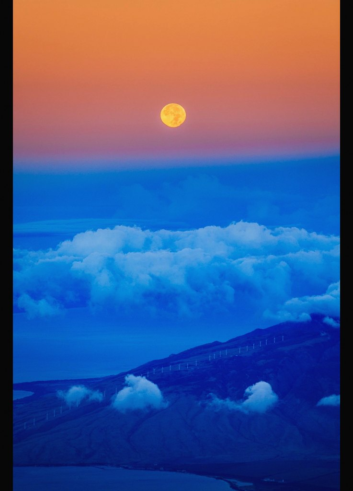

Genesis 28:16
Surely God
Is in This
Place.
And I didn't know it. — A newspaper for the places between Sundays. Issue 002 arrives next month. Leave this one somewhere.
Between SundaysIssue 001Pick it up. Pass it on.